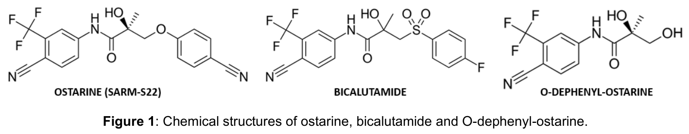

Technical Letters · TL12 (replaces TL2018/01)
Edition v2.0, 2018 (version 2.0) · effective 31 January 2018 · superseded
Retrieved on 25 November 2026 from https://www.wada-ama.org/sites/default/files/resources/files/tl12_ostarine.pdf
Editions: v3.0, 2021 (current) · v2.0, 2018
p. 1
OSTARINE
*The approval by the WADA Executive Committee is applicable only to Technical Letters issued after November 2019.
The World Anti-Doping Agency wishes to draw the attention of the Laboratories to the structural similarities between aryl-propionamide based Selective Androgen Receptor Modulators (SARMs; prohibited under section "S1.2 Other Anabolic Agents" of the Prohibited List) and their non-prohibited analogs, and the need to include appropriate target compounds into the procedures to ensure the correct reporting of analytical findings for these Prohibited Substances.
Technical Letter TL07 (which replaces TL06/2016) addressed analytical findings for O-dephenylandarine, a Metabolite of andarine which may also be present in a Sample as a Metabolite of the permitted anti-androgen flutamide.
This TL12 pertains to the reporting of analytical results for another SARM, ostarine (also known as S-22 or Enobosarm).
Ostarine is excreted in urine mainly as the unmodified parent compound or as its glucuronide-conjugated phase-II Metabolite, whereas the abundance of the O-dephenyl-ostarine Metabolite is very low when compared to the parent drug. Furthermore, since O-dephenyl-ostarine could also be present in urine Samples as a contaminant/impurity and/or minor Metabolite of bicalutamide¹ , this Metabolite shall not be considered as the sole criterion for the reporting of an Adverse Analytical Finding for ostarine.

Figure 1: Chemical structures of ostarine, bicalutamide and O-dephenyl-ostarine.
To correctly report findings for ostarine, WADA recommends the following:
"Reporting of Adverse Analytical Findings for ostarine shall be based on the detection of the parent compound (free form and/or glucuronide). Detection of ostarine and/or its glucuronidated conjugate constitutes unequivocal proof of ostarine Use, irrespective of the detection of bicalutamide and/or its Metabolite(s)"
Should you have any further questions, please do not hesitate to contact the WADA Science Department.
¹Bicalutamide is a permitted, non-steroidal anti-androgenic medication of very similar chemical structure to ostarine (Figure 1), which is primarily used to treat prostate cancer. Ostarine is not a Metabolite of bicalutamide.
Retrieved on 25 November 2026 from https://www.wada-ama.org/sites/default/files/resources/files/tl12_ostarine.pdf